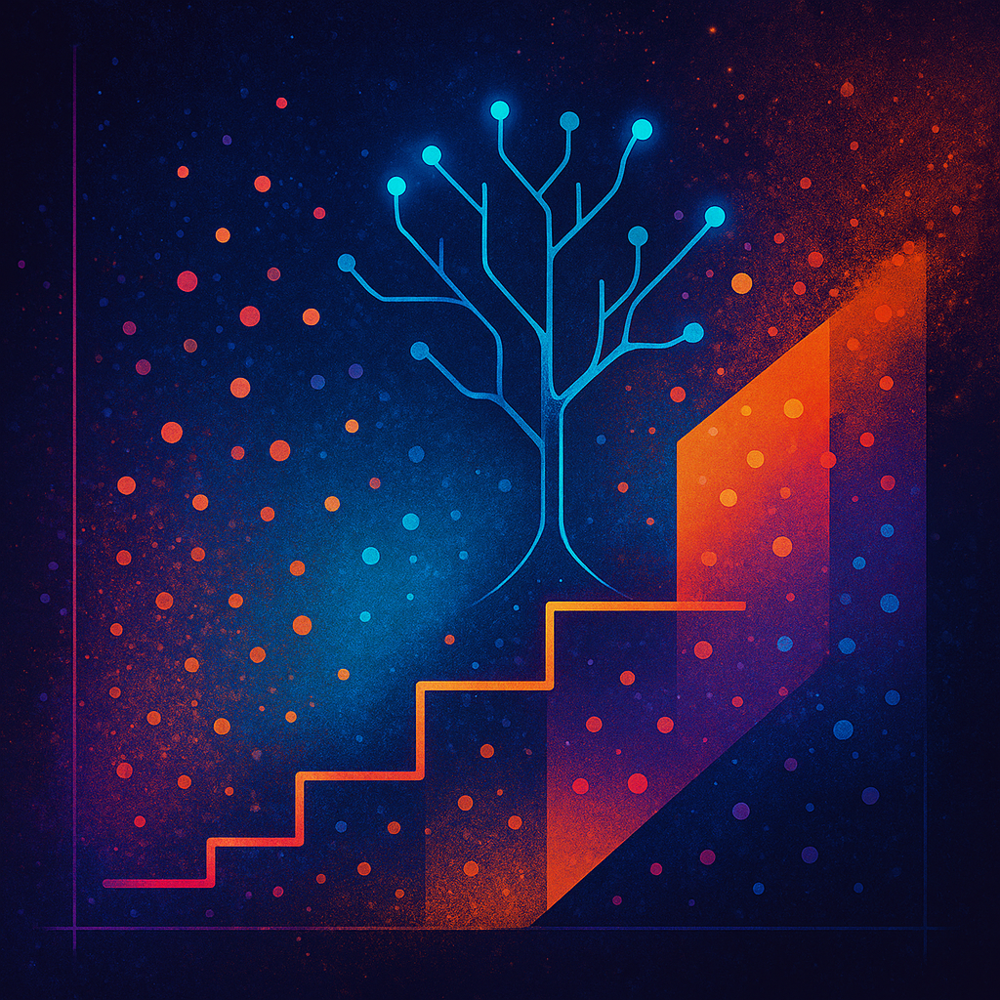
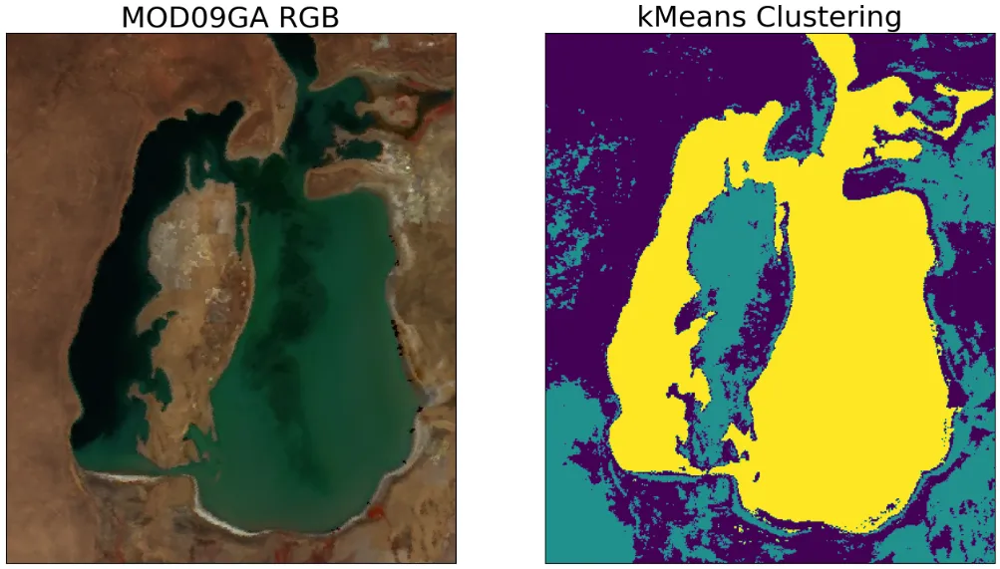

Researcher. Developer. Activator.
I'm a PhD student in Computer Science at the University of Minnesota advised by Dr. Vipin Kumar. My research is focused on application of machine learning to Earth science problems, with a particular emphasis on remote sensing imagery.
Currently, I'm working on the problem of spatial upscaling to estimate global carbon and energy fluxes in terrestrial ecosystems.
My broader interests include:
- Machine Learning & AI
- Upscaling/Downscaling
- Multi/Hyperspectral Remote Sensing Imagery
- Knowledge-Guided Machine Learning (KGML)
- Big Geospatial Datasets
- Super-resolution
Affiliations:
- Research Assistant, 05.2025-present, Data Mining Lab, University of Minnesota
- Research Assistant, 08.2024-present, Real-time GeoInformation Systems Lab, University of Minnesota
- Private Consultant, 11.2023-08.2024, Online
- Research Assistant, 05.2021-08.2024, Climate and Environmental Physics Lab, Ural Federal University
- Teaching Assistant, 07.2023 and 07.2024, Climatematch Academy, Online
Education:
- Ph.D. Computer Science, 2025-present, University of Minnesota, MN, USA
- M.S. GIS, 2024-2025, University of Minnesota, MN, USA
- M.S. Big Data and Machine Learning, 2022-2024, ITMO University, Saint Petersburg, Russia
- B.S. Hydrometeorology, 2018-2022, Ural Federal University, Yekaterinburg, Russia
Blog


Semantic Segmentation of Remote Sensing Imagery using k-Means
Read on MediumPublications
NorthFlux: Upscaling carbon fluxes in the northern hemisphere using an ensemble of regression machine learning models
(under review)
Estimates of Carbon Dioxide Flux into the Forest Ecosystem Based on Results of Ground-Based Hyperspectral Sounding of the Atmosphere and an Artificial Neural Network Model
Atmospheric and Oceanic Optics 37.2 (2024): 199-204
Read Paper
A neural network model for estimating carbon fluxes in forest ecosystems from remote sensing data
Atmospheric and Oceanic Optics 36.4 (2023): 323-328
Read Paper